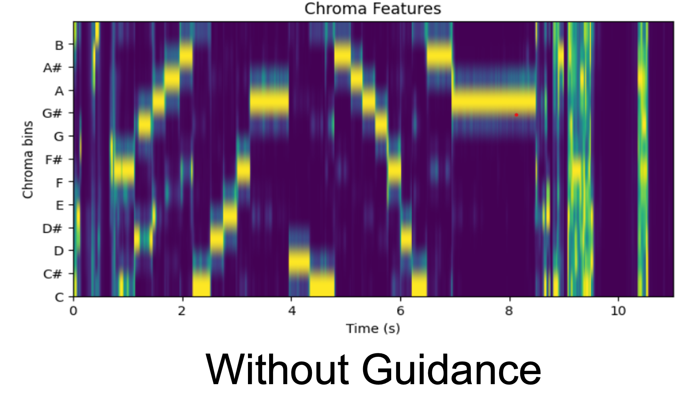
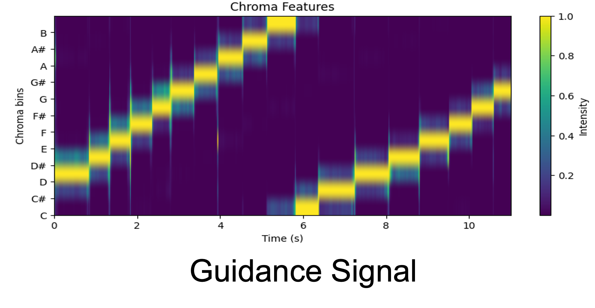
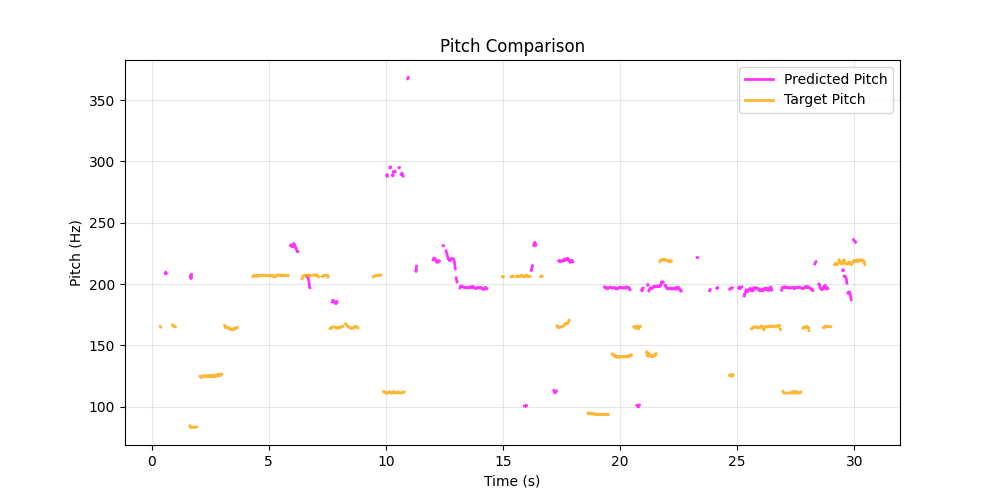

Chords
Generated Sample 1 (without Guidance):
Prompt: Beginner Saxophone Practice Slow Ascending Chromatic Scale
Generated Sample 2 (with Guidance):
Panflute Chromatic Scale
Melody
Target Audio: Nylon Guitar
Nylon Guitar, Pitch Guidance
Prompt: nylon guitar country twang light
Random Stuff
Guidance Fail (Whale in Pain)
Prompt: Nylon Guitar Country Sound
(At least we got the guidance to do something)